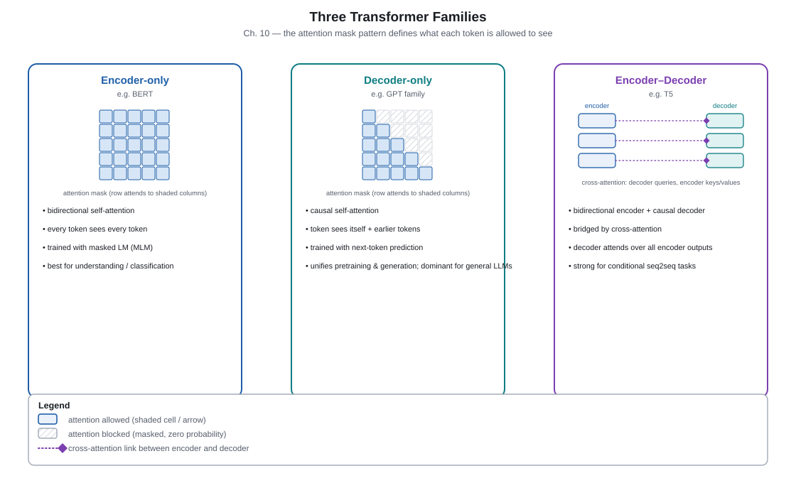

Part 3 of 6
Scaling: one architecture, many training contracts
The decoder-only Transformer links a simple causal objective to broad-generation behavior. Its success made objective choice, data design, compute allocation, and inference economics first-class architectural concerns.
Large language models · 2018–
Chapter 10. Decoder-Only LLMs
Why this mattered
Decoder-only Transformers align their causal mask with the natural task of continuing text. A single next-token objective can absorb unlabeled text at scale and can express many tasks as prompts followed by completions. This unification helped establish the modern LLM pattern, but generation remains autoregressive and therefore serial one token at a time. PDF pp. 24–25.
Key takeaways
- A causal decoder predicts each token using only tokens to its left.
- Self-supervised next-token prediction supplies labels directly from text.
- Prompting expresses a task through the prefix rather than changing the network at inference time.
- KV caching avoids recomputing past keys and values but consumes memory that grows with context length.
- In-context learning is observed task adaptation from examples in context; its mechanism is still an active research topic.
Core explanation
In a decoder-only block, masked self-attention allows token position t to use 1…t−1, never future tokens. Training places a prediction target at every position in a document, making a large corpus a large set of supervised next-token examples. At inference, the model appends one token, caches the new key and value for each layer, and repeats. The cache makes each step avoid replaying the whole prefix but leaves attention over an ever-growing history.

| Family | Attention visibility | Natural use | Representative objective |
|---|---|---|---|
| Encoder-only | Bidirectional input context | Representing or labeling supplied text | Masked-token prediction |
| Encoder–decoder | Source encoder + causal target decoder | Conditional generation | Denoising or paired sequence likelihood |
| Decoder-only | Causal prefix only | Continuation and prompted generation | Next-token prediction |
GPT-style systems showed that a decoder can be pretrained on ordinary text and then adapted, while later scale made zero- and few-shot prompting much more conspicuous. This is a behavioral observation, not evidence that the model stores an explicit task-specific program for every prompt. Prompt format, examples, and decoding all influence the outcome.
Going deeper: cache versus training parallelism
During training, a causal mask lets all positions in a known sequence be processed in parallel. During generation, the next token is not known until the preceding token is sampled, so decoding is serial. KV caching changes repeated compute into memory: it stores each past layer’s keys and values, while the new query attends to them.
Checkpoint
- What does a causal mask permit at position
t?Reveal answer
Attention to earlier (and conventionally its own) positions, but not to later tokens. - Why is next-token pretraining self-supervised?
Reveal answer
The following token in ordinary text is the target, so labels come from the data itself. - What does the KV cache save, and what does it cost?
Reveal answer
It saves recomputation of past projections but consumes memory proportional to cached history.
Pretraining design · 2018–
Chapter 11. Pretraining Paradigms
Why this mattered
Architecture alone does not determine what a model learns: the corruption or prediction task defines what information is visible and what the model must reconstruct. Masked, causal, and denoising objectives create different inference contracts and suit different model families. Data mixture, filtering, deduplication, and post-training are therefore part of the effective model design rather than mere plumbing. PDF pp. 26–28.
Key takeaways
- Masked language modeling predicts hidden tokens from bidirectional context.
- Causal language modeling predicts the next token from a left prefix.
- Denoising seq2seq reconstructs a clean sequence from a corrupted input.
- Fill-in-the-middle objectives explicitly train infilling behavior.
- Instruction tuning and preference optimization modify behavior after pretraining; they do not necessarily change the Transformer forward pass.
- Deduplication and data mixture affect both quality and the meaning of evaluation results.
Core explanation
With MLM, selected input tokens are corrupted or hidden and an encoder uses both left and right evidence to predict them. With CLM, the model never sees the target future and is naturally ready to continue a prefix. Denoising objectives can remove or span-mask portions of text and ask an encoder–decoder to reconstruct the original. Each objective gives a different answer to: “What will the model have available at use time?”
| Objective | Visible context when predicting | Typical family | Strength / limitation |
|---|---|---|---|
| MLM | Left and right unmasked tokens | Encoder-only | Rich representation; not directly left-to-right generation |
| CLM | Left prefix | Decoder-only | Direct generation; serial decoding |
| Denoising | Corrupted source | Encoder–decoder | Flexible transformations; two-stack architecture |
| FIM | Prefix and suffix around a gap | Often decoder-only | Trains code/text infilling explicitly |
Curricula and mixtures change the relative gradient signal from sources such as web text, code, mathematics, and multilingual data. Duplicates can cause an apparent benchmark success to reflect memorized overlap rather than generalization. After pretraining, supervised instruction data and preference-based methods can shape helpfulness or style, but it is useful to keep those training-system innovations separate from claims about a new attention architecture.
Going deeper: corruption versus likelihood
These losses are related but not interchangeable. A causal model maximizes a left-to-right factorization of sequence likelihood. A masked objective predicts selected positions under a corruption scheme, and denoising models condition on a transformed source. When comparing numbers across objectives, ask whether the same tokens, conditioning information, and evaluation protocol are being scored.
Checkpoint
- Which objective provides both left and right context for a masked position?
Reveal answer
Masked language modeling. - Why does causal LM naturally support continuation?
Reveal answer
Its training prediction at every position uses only a left prefix, matching generation’s available context. - Why is data deduplication scientifically important?
Reveal answer
It reduces train–test overlap and memorization effects that can mislead evaluation. - Does RLHF necessarily introduce a new base architecture?
Reveal answer
No; it primarily changes post-training objectives and supporting training systems.
Compute-aware scaling · 2020–
Chapter 12. Scaling Laws
Why this mattered
Scaling-law studies made loss trends across model size, data, and compute measurable enough to guide expensive training runs. They shifted discussion from “make it bigger” to allocating a fixed budget among parameters, tokens, and optimization. The laws describe smooth average loss behavior under studied conditions; they do not promise smooth changes in every downstream capability or deployment cost. PDF pp. 29–31.
Key takeaways
- Empirical loss often follows approximate power-law trends with scale over measured ranges.
- Parameters, training data, and compute constrain one another under a fixed budget.
- A common training-compute approximation for dense Transformers is
C ≈ 6ND, with assumptions. - Chinchilla-style analysis argued that many earlier large models were under-trained relative to their parameter count.
- “About 20 tokens per parameter” is a fit-specific rule of thumb, not a physical constant.
- Training-optimal and serving-optimal models may differ because inference cost is amortized differently.
Core explanation
Researchers fit functions such as L(N) ≈ A N−α + L∞, where N is parameter count and loss improves with a diminishing-return power law. Similar fits can use data tokens D and total compute C. Under a limited compute budget, spending it only on parameters leaves too little data exposure; spending it only on tokens leaves too little model capacity. The useful question is an allocation problem, not a one-dimensional race.
C ≈ 6 N DA pedagogical dense-Transformer approximation: N parameters times D training tokens, with a constant that depends on accounting and implementation assumptions.
| Question | What is held scarce? | Typical consequence |
|---|---|---|
| Parameter scaling | Data and compute treated as sufficient | Tests capacity trend at larger N |
| Compute-optimal training | Total training FLOPs | Balances model size and token count |
| Serving-aware choice | Training plus repeated inference cost | May favor a different size/data allocation |
| Capability evaluation | Task and measurement design | Can show thresholds or variance despite smooth loss |
Kaplan et al. reported predictable loss scaling trends, while Hoffmann et al. revisited the allocation under a compute budget and found benefit in substantially more training tokens for a given model size. Neither result removes the need to state corpus, objective, hardware, optimization, and evaluation conditions. A smooth held-out loss curve can coexist with abrupt-looking changes in a benchmark that has thresholds, prompts, or measurement noise.
Going deeper: loss laws and capability claims
A power law is an empirical relationship estimated from runs, not a derivation that every skill must improve continuously. Downstream scores can be nonlinear because the task uses exact-match thresholds, a particular prompt, a small test set, or a capability that becomes usable only beyond some error level. Report the underlying loss, the evaluation protocol, and uncertainty separately rather than treating one benchmark jump as proof of a new physical regime.
Checkpoint
- What three broad resources are jointly allocated in a scaling study?
Reveal answer
Model parameters, training data/tokens, and compute. - What does
C ≈ 6NDleave out?Reveal answer
It is an approximate accounting rule with assumptions; it omits many implementation, architecture, and systems details. - Why is “20 tokens per parameter” not universal?
Reveal answer
It is a fitted rule of thumb from a particular experimental setup and objective, not a law of nature. - Can smooth loss guarantee smooth benchmark capability?
Reveal answer
No; tasks and measurements can introduce thresholds, variance, and nonlinear-looking scores.